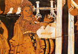

Orpheus
Our focus on this occasion is the descent into the underworld by the semi-divine Orpheus, who goes down into the realm of the dead in search of his wife Eurydice. First of all, it is useful to clarify who Orpheus is and what his characteristics are within Greco-Roman mythology? Most importantly, Orpheus is a singer and a poet. He is also, however, as we will see, a prophet and a mythological figure who was deeply connected to religious worship. Orpheus is semi-divine, the son of one of the Muses (a fitting birth, of course, for a great poet and singer), supposed to have come from Thrace, in northern Greece. He is well known for the charm of his music and is in one myth said to accompany Jason and the Argonauts on the quest to get the golden fleece; during the journey he is able to charm terrible monsters and thereby help Jason on his quest.
The most famous myth, however, associated with Orpheus is his descent into the underworld to recover his wife Eurydice, whom he original wins as his wife by charming her with his music and poetry. The story is told at the beginning of book 10 of Ovid’s Metamorphoses (see M&L 384–8). Eurydice is bitten by a snake and dies, after which Orpheus goes in search of her. Because of his beautiful singing, Hades and Persephone (referred to in Latin as Proserpina) are convinced to give Orpheus a chance to regain his love from the underworld (see image 1). The conditions, however, are strict – Orpheus must lead Eurydice out of the underworld without looking back upon her face and to see if she is alright. Here is perhaps one of the most moving scenes in literature; can you imagine being unable to look upon the face of the one you love in such a situation? Orpheus fails in his task, despite, or rather because of, his great love for Eurydice.
{kind=link}
In fact, Orpheus is so constant to his dear Eurydice that he vows, after losing her once again to the underworld, to leave aside women altogether. He is said, therefore, to have been the original male lover of men amongst the Thracians, because he could no longer bear to be with women. It is this which eventually leads to his own death. For, by scorning women, Orpheus brought about their rage; he was a beautiful man, who could play the most charming of music, and women were constantly falling in love with him. A mob of Thracian women (the ancient equivalent of modern fans; think, for example, of Elvis) is often mad with him. At first, the anger of the women leads to little, for he is able to charm them with his music. But one day, his music is obscured by the shouting of the Bacchantes, women celebrating the rites of Dionysus, who kill and dismember him (see images 2-3). Dionysus then punishes the Bacchantes who killed Orpheus by turning them into trees and leaving Thrace.
{kind=link}
{kind=link}
Now Orpheus’ descent into the underworld is not significant only because it is a moving love story; it is also indicative of his frequent connection in the ancient world with death and the afterlife. Orpheus is in mythology a famous priest and spiritual leader in Greece and was connected to both Apollo and Dionysus. His connection with Dionysus is evident in the myth of his death just told, where he is killed by worshippers of Dionysus, who are then punished by Dionysus for their hubristic act. Like Dionysus he is intrinsically linked with mystery religions and was understood to be a prophet and leader of people. Another version of his death in mythology has him killed by Zeus with a thunderbolt, because he revealed in his mysteries information to humans which was the property of the gods. As a prophet and a musician, his connection with Apollo is also apparent. But, unlike Dionysus and Apollo, Orpheus was not a god, but a semi-divine hero who lived and died. His connection to humanity is therefore also prominent; he is a teacher of the deepest truths about life and death to mankind. It is, moreover, no coincidence that Orpheus is a teacher of divine mysteries and at the same time a great poet, for prophecy and music/poetry are closely connected in the ancient world.